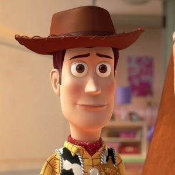

Toy Story 4

Synopsis
Woody and the gang go on a road trip with new toy Forky, who's convinced he's trash and doesn't yet understand his role in the world. Along the way, Woody is unexpectedly reunited with independent spirit Bo Peep and finds himself faced with a decision, and a future, he never imagined.
Characters
Woody
Played by
He is a vintage cowboy doll that originally belonged to a boy named Andy Davis. As Andy's favorite since kindergarten, Woody served as the leader of Andy's toys, a position he upheld by looking out for each member of the group. When Andy enters adulthood and leaves for college, Woody is donated to a little girl named Bonnie Anderson. He remains with Bonnie for some time, before choosing to become an owner-less antique devoted to helping lost toys find owners, alongside his girlfriend.
Buzz Lightyear

Played by
He is a vintage cowboy doll that originally belonged to a boy named Andy Davis. As Andy's favorite since kindergarten, Woody served as the leader of Andy's toys, a position he upheld by looking out for each member of the group. When Andy enters adulthood and leaves for college, Woody is donated to a little girl named Bonnie Anderson. He remains with Bonnie for some time, before choosing to become an owner-less antique devoted to helping lost toys find owners, alongside his girlfriend.
Forky

Played by
He is a vintage cowboy doll that originally belonged to a boy named Andy Davis. As Andy's favorite since kindergarten, Woody served as the leader of Andy's toys, a position he upheld by looking out for each member of the group. When Andy enters adulthood and leaves for college, Woody is donated to a little girl named Bonnie Anderson. He remains with Bonnie for some time, before choosing to become an owner-less antique devoted to helping lost toys find owners, alongside his girlfriend.
Bo Peep

Played by
He is a vintage cowboy doll that originally belonged to a boy named Andy Davis. As Andy's favorite since kindergarten, Woody served as the leader of Andy's toys, a position he upheld by looking out for each member of the group. When Andy enters adulthood and leaves for college, Woody is donated to a little girl named Bonnie Anderson. He remains with Bonnie for some time, before choosing to become an owner-less antique devoted to helping lost toys find owners, alongside his girlfriend.